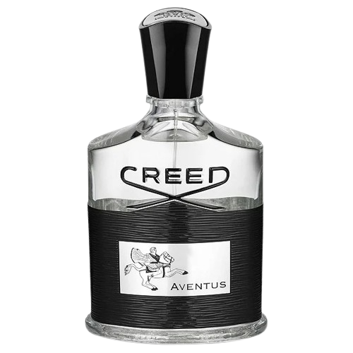
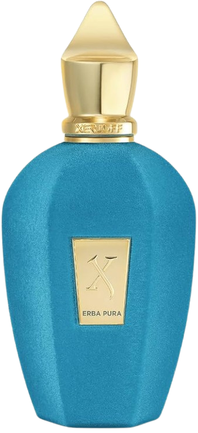
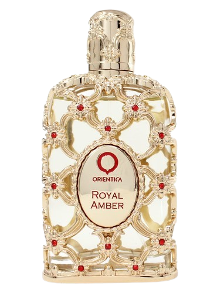

Perfumes de Nicho
Origem
A origem desse movimento remonta aos anos 1970 e 1980, principalmente na França e na Itália, quando perfumistas renomados começaram a se afastar das grandes indústrias para expressar sua criatividade sem limitações comerciais. Marcas como L’Artisan Parfumeur (fundada em 1976, na França) e Creed (de origem inglesa e com tradição desde o século XVIII) são exemplos pioneiros que ajudaram a definir o conceito de perfumaria de nicho.
Legado
Os perfumes de nicho surgiram como uma resposta à perfumaria comercial, buscando oferecer algo mais exclusivo, artístico e autêntico. Enquanto as grandes marcas produzem fragrâncias voltadas para o público em geral, os perfumes de nicho são criados por casas perfumistas independentes, que priorizam a qualidade dos ingredientes, a originalidade das composições e a identidade artística do criador.
Perfumes

Creed Aventus
O Creed Aventus é um perfume de nicho masculino criado pela tradicional Casa Creed, uma das marcas mais antigas e respeitadas da perfumaria mundial.A fragrância combina notas frutadas e amadeiradas, resultando em um aroma elegante, poderoso e inconfundível. No topo, há abacaxi, maçã, groselha preta e bergamota; no coração, patchouli, jasmim e madeira de bétula; e na base, musk, musgo de carvalho, âmbar cinzento e baunilha. Essa mistura cria um perfume sofisticado, masculino e extremamente marcante.
R$ 2.150,99.
Erba Pura
O Erba Pura é um perfume de nicho unissex da renomada casa italiana Xerjoff, criada em 2003 por Sergio Momo. A marca é conhecida por combinar arte, luxo e alta perfumaria, utilizando matérias-primas raras e frascos de design sofisticado, feitos à mão na Itália. Sua composição traz notas de frutas cítricas e doces no topo — como laranja, limão e bergamota — seguidas de um coração envolvente de frutas exóticas, e uma base sofisticada de almíscar branco, âmbar e baunilha de Madagascar
R$ 2.808,00
Royal Amber
é uma fragrância da marca Orientica, que aposta no estilo oriental‑luxuoso, voltado para quem busca algo marcante e sofisticado. Família olfativa: É descrito como oriental‑ambarado com toques frutados e amadeirados, unissex, embora muitos usuários sintam ele mais feminino ou com forte presença.
R$ 521,64